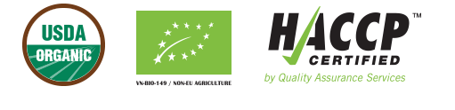
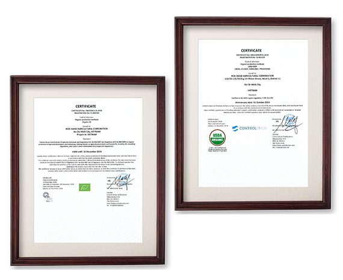

Ben Tre
is the province in Mekong delta area of Southern Vietnam, where is
known as "the Rice Bowl of Vietnam"
Planting
Zone
After researching the planting zones, rotational rice cultivation and
shrimp hatchery model at Thanh Phu ward Ben Tre province is certified
to meet difficult requirements of organic cultivation. During salinity
intrusion period, these areas are applied to farm shrimp. Because the
economic value of shrimp is higher, farmers will ensure not to use
pests in the rotational rice crops to avoid bad impacts on shrimp
crops. That forms farmer's cultivation habit - not using pests in
planting.
Moreover, each farm has 5 to 7 meter fence,
therefore it is entirely isolated with other areas to ensure safety in
organic rice production. It is certain that the planting zones can be
uncontaminated by other areas and does not have emission in glass
house while processing.
Additionally, Ben Tre is also an
ecologically sensitive wetland. Therefore, it is hard for weeds to
grow in this area's planting zones. It is unnecessary for farmers to
utilize herbicide.
Certificates
Hoa Nang organic rice is proudly certified organic by the Control
Union (The Netherlands) with the requirements of USDA Organic and
European organic standards: non-pesticides, non-herbicides, only use
organic fertilizers with have OMRI certified, apply integrated pest
control practices with natural methods.

